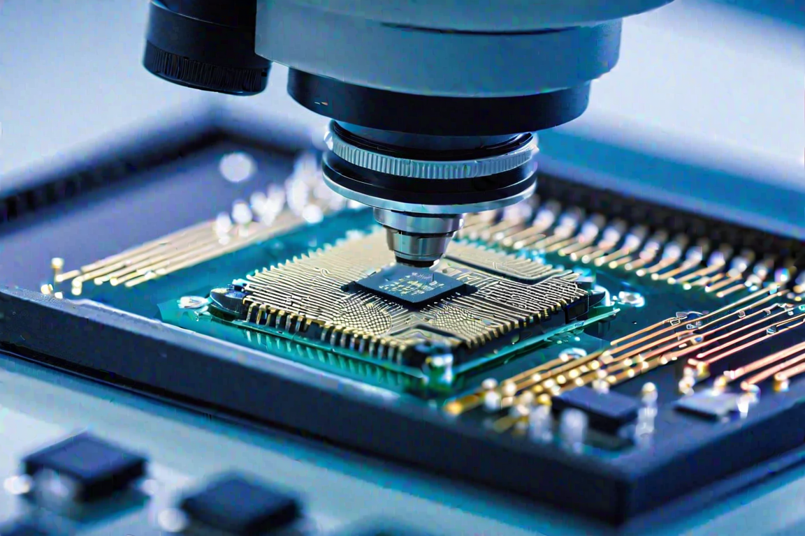

The Lone Star State Transforms into a Tech Powerhouse
Much like a small town becoming a Hollywood hotspot, Texas has drawn in major players, redefined its local economy, and positioned itself at the forefront of future chip manufacturing. Discover the factors that propelled Texas from modest beginnings to the core of American chip production.
The Story of Texas in Chip Manufacturing
TechnologyThe applied tools, systems, and infrastructure through which scientific knowledge is put to practical use.In the Lexicon →Once known for its widespread oil fields and vast ranches, Texas has transformed into a flourishing hub of advanced technology.
ManufacturingEfforts to revitalize industrial productionIn the Lexicon →The Lone Star State has impressively broken barriers to emerge as the primary US location for chip production. Key strategic partnerships and compelling economic incentives have fueled this remarkable transformation. Much like a small town becoming a Hollywood hotspot, Texas has drawn in major players, redefined its local economy, and positioned itself at the forefront of future chip manufacturing. Discover the factors that propelled Texas from modest beginnings to the core of American chip production.
SemiconductorMaterial with electrical conductivity between a conductor and an insulatorIn the Lexicon →Texas becoming the hub for chipmaking is like a small town becoming the home to a major film production. It pulls. in the big names, puts money into mom-and-pop shops, and puts the town on the map, or in this case, right across the globe.
"The future belongs to those who believe in the beauty of their dreams."
— Eleanor Roosevelt
The Rise of the Silicon Prairie
Texas has now transformed into a hub for technological progress. With strategic planning and forward-thinking leadership, Texas has welcomed the semiconductor industry, thus earning its nickname, "Silicon Prairie."
Case and Point: Austin's Tech Boom
AMDAdvanced Micro DevicesIn the Lexicon →Austin, the capital of Texas, is experiencing a notable tech surge due to the presence of eminent chip manufacturers and innovative startups. This vibrant tech hub, attracting leading talent and investment, has thrust Texas to the forefront of chipmaking. Texas's rise to the top of the semiconductor industry is due to strategic planning and savvy foresight.
Recognizing the sector's potential, the state has fostered a supportive environment for its growth. This includes offering incentives and tax breaks to semiconductor companies, investing in R&D infrastructure, and implementing policies that bolster the sector's development. Additionally, the state's leadership has encouraged partnerships among industry, academia, and government to foster collaboration and knowledge sharing.
The result of these efforts can be seen in Austin's tech boom.
Austin has become a major hub for semiconductor manufacturing and innovation. Major companies like Samsung, Intel, and AMD have established a significant presence, creating opportunities for collaboration and advancing chip technology. This concentration of industry leaders has attracted top engineering talent to the region's vibrant tech ecosystem. Strategic planning in Texas has facilitated the growth of the "Silicon Prairie" in Austin, cementing the state's reputation as a chipmaking capital and tech innovator.
Strategic Partnerships and Talent Pool
Texas' chipmaking industry thrives due to strategic partnerships between private companies, universities, and government. These collaborations have cultivated talent and fostered an R&D-friendly environment.
Start Early with University Collaborations
Collaborations between semiconductor companies and Texas universities have fostered research and innovation. Graduates contribute to the industry with cutting-edge knowledge and skills, ensuring a continuous cycle of growth and progress. These partnerships provide opportunities for students to gain practical experience through internships and research projects, bridging the gap between academia and industry.
TITexas InstrumentsIn the Lexicon →One real-world example of such a collaboration is the partnership between Texas Instruments (TI), a leading semiconductor company, and the University of Texas at Austin (UT Austin).
TI has established the Analog Design Academy at UT Austin, which offers a specialized curriculum focused on analog chip design. This collaboration allows students to learn from industry experts, work on real-world projects, and gain hands-on experience with state-of-the-art equipment.
Another example is The Texas A&M Engineering Experiment Station (TEES) collaborates with numerous semiconductor firms, offering advanced research facilities, expert staff, and funding for pioneering work in chip design, materials science, and manufacturing. This partnership not only boosts industrial research but also gives students mentorship and internships in the field.
These strategic partnerships have resulted in a strong talent pool in Texas, attracting top-notch students and researchers from around the world.
The growth of Texas's semiconductor industry is driven by the rich pool of skilled professionals, prompting the formation of additional chipmaking firms. Collaborative efforts among businesses, universities, and the government have cultivated a conducive environment for innovation and new ventures, giving rise to startups born from academic research. Texas's chipmaking success hinges on these strategic alliances that bolster talent, enhance R&D, and propel industry expansion.

Semiconductor Boom on the Horizon — in North Texas
The semiconductor industry in Texas is proliferating rapidly due to the increasing demand for Texas-made chips and semiconductors. These advanced microchips are essential components in electronic devices such as smartphones and computers. Despite the popularity of modern technology, there is still a strong interest among collectors and enthusiasts in vintage computer chips. Texas has a long history of producing high-quality semiconductors, making it a hub for both traditional and cutting-edge chip manufacturing. As the semiconductor industry continues to grow in Texas, the demand for vintage computer chips remains strong, solidifying the state's position in the world of electronics.
Texas is Spacious
While Texas' spaciousness may not directly contribute to its success as a hub for chip manufacturing, it does provide ample room for the construction and expansion of semiconductor manufacturing facilities. The availability of space allows companies like Samsung and TI to build large-scale plants with advanced technologies and extensive production capabilities. This, in turn, supports the growth and development of the industry in Texas. Additionally, the spaciousness of the state allows for the establishment of research institutions and universities, which further contribute to Texas' reputation as a leading destination for chip manufacturing.
Water and power availability: Texas has abundant water and power resources, which are essential for chip manufacturing. The state has access to ample water sources, such as rivers and reservoirs, which are used for cooling and other manufacturing processes. Texas also has a reliable and affordable power supply, with a diverse mix of energy sources including natural gas, coal, wind, and solar. The availability of water and power resources in Texas ensures uninterrupted operations and supports the high energy requirements of chip manufacturing facilities.
Texas' success as a hub for chip manufacturing can be attributed to several key factors including the presence of major companies like Samsung and TI, economic incentives provided by the state government, a skilled workforce and access to research institutions, collaborations and partnerships, and the availability of water and power resources. These factors have collectively contributed to the growth and development of the semiconductor industry in Texas, making it a leading destination for chip manufacturing in the United States.
Samsung and Texas Instruments Transformed the Lone Star State
Samsung and Texas Instruments (TI) played a significant role in establishing Texas as a major hub for chip manufacturing in the United States. Here's how they contributed to this development:
Samsung's Austin Semiconductor Plant: In 1996, Samsung opened its semiconductor manufacturing plant in Austin, Texas. The plant initially focused on producing memory chips, but it gradually expanded its operations to include other types of chips, such as processors and image sensors. The company invested heavily in the facility's expansion and modernization, making it one of the largest and most advanced chip fabrication plants in the world.
TI's Legacy in Texas: Texas Instruments, an American semiconductor company, has had a long-standing presence in the Lone Star State. The company was founded in Dallas, Texas, in 1930 and established several manufacturing facilities across the state over the years. TI's chip manufacturing operations in Texas have been crucial in making the state a hub for the industry.
Texas's pro-business approach and attractive economic incentives have enticed chipmakers to establish their manufacturing facilities in the state. Favorable tax policies and streamlined regulations create an environment that encourages investment and growth.
Enter Tesla's Gigafactory
Tesla's decision to build a Gigafactory in Texas exemplifies the state's appeal to tech giants. The massive facility promises job creation and economic growth, further solidifying Texas's position as a technology powerhouse.
Skilled Workforce and Research Institutions: Texas boasts a highly skilled workforce in the field of semiconductor manufacturing. The state is home to several renowned research institutions, including the University of Texas at Austin, which provides a strong talent pipeline for the industry. The availability of skilled workers and access to cutting-edge research facilities have been crucial factors in Texas' success as a hub for chip manufacturing.
Collaborations and Partnerships: Samsung and TI have actively collaborated with local universities, research institutions, and government entities in Texas. These partnerships have facilitated knowledge sharing, research and development initiatives, and workforce training programs. The collaborative approach has further enhanced Texas' reputation as a thriving semiconductor hub.
The combined efforts of Samsung, TI, and the support from the state government have positioned Texas as a leading destination for chip manufacturing in the United States. This has not only boosted the local economy but also strengthened the country's domestic chip production capabilities.
Competition and Global Landscape
Critics argue that Texas faces fierce competition from other global chipmaking hubs. Countries like Taiwan and South Korea dominate the semiconductor industry, raising concerns about Texas's ability to maintain its leading position in the chipmaking industry. These countries have established strong ecosystems, with a highly skilled workforce, advanced infrastructure, and government support, making it difficult for Texas to compete.
TSMCTaiwan Semiconductor Manufacturing CompanyIn the Lexicon →One of the main concerns is that Taiwan and South Korea are home to some of the largest semiconductor companies globally, such as TSMC and Samsung Electronics. These companies have significant market share and constantly invest in research and development, allowing them to stay ahead in terms of technological advancements. This gives them a competitive advantage over Texas-based chipmakers.
Let's elaborate on the factors that define the competitiveness in global chipmaking:
- Technological Innovation: Leading chipmaking nations like Taiwan and South Korea are home to companies like TSMC and Samsung Electronics, which are at the forefront of semiconductor innovation. They invest significantly in research and development, enabling them to produce state-of-the-art chips that are smaller, faster, and more energy-efficient.
- Scale and Market Share: These companies have managed to achieve economies of scale that allow them to dominate global market share. Their production volumes reduce costs and establish their presence across multiple markets, making it challenging for new entrants to compete.
- Government Support: The semiconductor industry is often characterized by strong government-industry partnerships, with governments providing subsidies, investing in infrastructure, and crafting policies to protect and enhance their domestic semiconductor industries.
To analyze Texas's position within this competitive landscape, consider the following aspects:
- Texas is working towards establishing an ecosystem that supports the semiconductor industry, including strong partnerships between universities, government, and industry to drive innovation.
- By offering considerable economic incentives and creating a business-friendly environment, is attracting new investments and companies to its semiconductor cluster, which may help local companies to reach economies of scale over time.
- While Texas has advanced research facilities and a growing talent pool, it would still need to increase investment in these areas to match the level of technological innovation found in leading chipmaking nations.
- Focus on certain niches within the semiconductor industry where it may have competitive advantages, such as specialized chip applications (e.g., automotive, energy sector) where its existing industrial strengths can be leveraged.
- From a strategic standpoint, diversification could be key. Texas might not be able to outcompete the likes of TSMC and Samsung Electronics on all fronts, but it could carve out segments of the market where it can lead.
Despite the stiff competition, Texas's continued growth illustrates its potential as a significant player in the field. To enhance its position, Texas and the companies within it need to continue their focus on innovation, talent development, strategic partnerships, and leverage the unique advantages the state offers. Given these considerations, while Texas faces challenges, its chipmaking "oasis" has solid foundations for competing in the global semiconductor industry.
Token Wisdom: Embracing Resilience
As Texas continues to chart its course as the American chipmaking hub, embracing resilience is vital. Adapting to the global landscape, fostering innovation, and nurturing partnerships will equip Texas to remain at the forefront of technological progress. By recognizing the strengths and advantages of countries like Taiwan and South Korea, Texas can learn from their strategies and implement similar approaches to maintain its competitive edge.
One key aspect for Texas to focus on is research and development. By investing in R&D, Texas can foster technological advancements and stay ahead in terms of innovation. This will require collaboration with universities, research institutions, and industry experts to drive breakthroughs in chip manufacturing. Texas should incentivize innovation by offering grants, tax breaks, and other financial incentives to semiconductor companies. This will encourage them to invest in new technologies, processes, and products, further enhancing their competitiveness.
It won’t hurt to strengthen its educational programs and create a pipeline of skilled talent. By partnering with universities and vocational schools, Texas can develop specialized programs that cater to the needs of the semiconductor industry. This will ensure a steady supply of qualified professionals who can contribute to innovation and production. Everything is bigger in Texas; the opportunity, the talented humans, and the tax incentives!
All these other countries have established supply chains and partnerships with other key players in the semiconductor industry. For instance, Taiwan has a close relationship with China, which is the largest consumer of semiconductors. This proximity allows Taiwanese companies to cater to the Chinese market efficiently. Similarly, South Korea has strong ties with Japan, another major player in the industry.
These partnerships provide a robust network that Texas may struggle to match.
Even more so, Taiwan and South Korea have a steady supply of talent in the field of semiconductor manufacturing. They have established educational institutions and training programs that produce a skilled workforce specifically tailored to the industry's needs. This ensures a constant pool of talent for innovation and production.
In contrast, Texas faces challenges in cultivating a similar ecosystem. While it has several semiconductor companies, including Texas Instruments, they may not have the same level of resources or access to the latest technology as their counterparts in Taiwan and South Korea. Additionally, Texas may need to invest heavily in infrastructure and educational programs to attract and retain top talent and remain competitive in the long run.
To keep ahead of everyone else, Texas could focus on developing strategic alliances with other chipmaking hubs. Collaboration with countries like Taiwan and South Korea could help leverage their expertise and resources. Texas could also invest in research and development, incentivize innovation, and strengthen its educational programs to foster a skilled workforce. By and large, while Texas currently holds a prominent position in the chipmaking industry, it faces tough competition from countries like Taiwan and South Korea.
All the Chips, Dips, and Devices — All at Once
Texas's transformation into the American chipmaking hub showcases the state's spirit of innovation and adaptability. With strategic partnerships, a flourishing talent pool, and business-friendly policies, Texas has harnessed the power of technology to fuel its growth and progress. As the semiconductor industry evolves, Texas stands tall, ready to shape the future of chip production. So, let us celebrate the visionaries and pioneers who have turned the Lone Star State into a technological oasis, blazing a trail of innovation that paves the way for a brighter and more technologically advanced future. Texas's success in becoming a chipmaking hub can be attributed to several key factors. Firstly, the state has actively pursued strategic partnerships with major semiconductor companies, attracting investment and fostering collaboration. These partnerships have not only brought economic benefits but have also facilitated knowledge transfer and technological advancements.
To further enhance its competitive edge and maintain its leading position in the semiconductor industry, Texas can consider implementing the following strategies:
- Foster a culture of entrepreneurship: Encourage and support startups in the semiconductor industry by providing funding, mentorship, and resources. Create an ecosystem that promotes innovation and attracts talent.
- Invest in infrastructure: Develop state-of-the-art facilities and infrastructure to support chip manufacturing and research. This includes investing in cleanrooms, advanced manufacturing equipment, and reliable energy sources.
- Promote collaboration and knowledge sharing: Facilitate collaboration between semiconductor companies, research institutions, and government agencies. Establish platforms for sharing best practices, research findings, and technological advancements.
- Embrace sustainability: Focus on sustainable manufacturing practices and renewable energy sources. Implement green initiatives to reduce the environmental impact of chip production.
- Support workforce development: Offer training programs, apprenticeships, and re-skilling opportunities to ensure a highly skilled and adaptable workforce. Collaborate with educational institutions to align curriculum with industry needs.
- Enhance supply chain resilience: Diversify supply chains and reduce dependence on a single region or country. Strengthen local manufacturing capabilities and encourage domestic production of critical components.
- Stay ahead of emerging technologies: Continuously monitor and invest in emerging technologies such as artificial intelligence, the Internet of Things, and 5G. Anticipate future trends and adapt accordingly.
- Streamline regulations and reduce bureaucratic hurdles: Create a business-friendly environment by simplifying regulatory processes and reducing unnecessary bureaucracy. Provide incentives for companies to establish their operations in Texas.
- Promote international trade and market access: Actively seek opportunities to expand market access for Texas-based semiconductor companies. Negotiate favorable trade agreements and remove barriers to international trade.
- Support research and development in emerging areas: Allocate resources towards research and development in emerging areas such as quantum computing, nanotechnology, and advanced materials. Foster partnerships with leading research institutions and industry experts in these fields.
By implementing these strategies, Texas can continue to be a global leader in the semiconductor industry and secure its position as a hub for technological innovation and progress. The semiconductor industry is constantly evolving, with new technologies and applications emerging rapidly. Texas's strong foundation, established partnerships, and talented workforce will enable it to stay at the cutting edge of innovation and continue driving growth in this crucial sector.
Texas's journey to becoming an American chipmaking hub is a testament to its visionaries and pioneers who have transformed the state into a technological oasis. Through strategic partnerships, a thriving talent pool, and business-friendly policies, Texas has harnessed the power of technology to fuel its growth and progress. As the semiconductor industry continues to advance, Texas stands poised to lead the way, shaping the future of chip production and contributing to a brighter and more technologically advanced future.